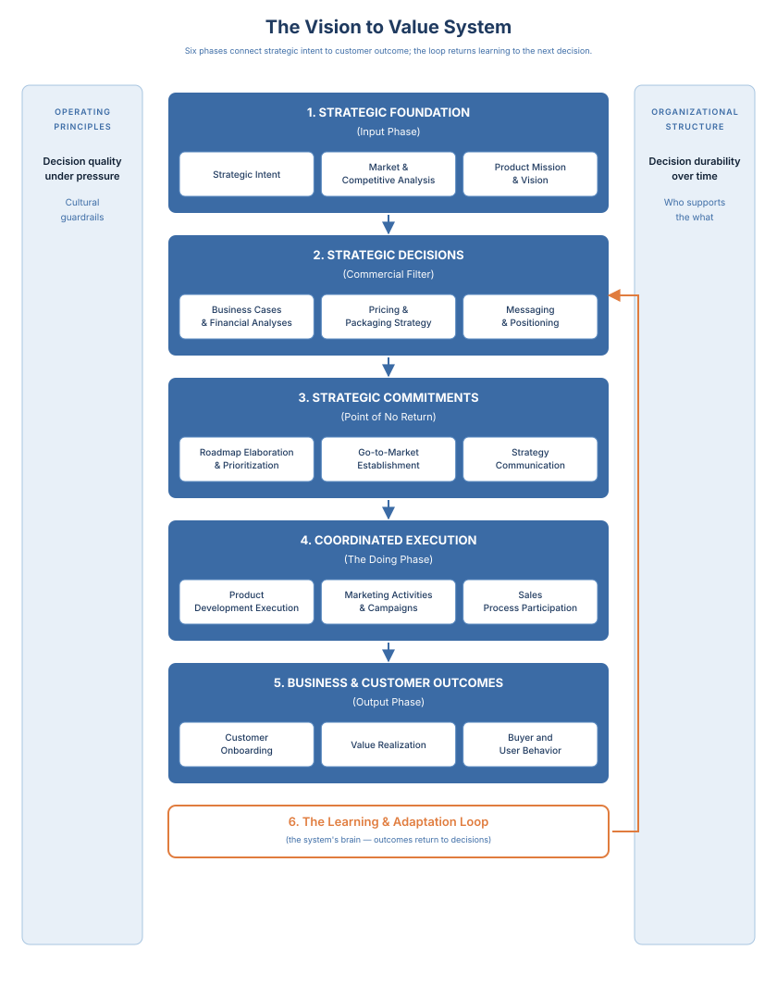
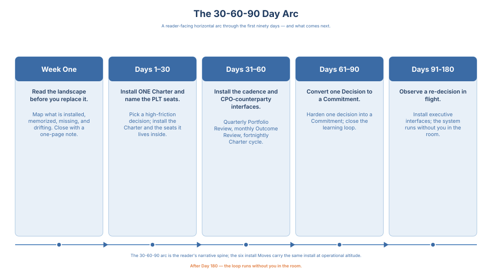
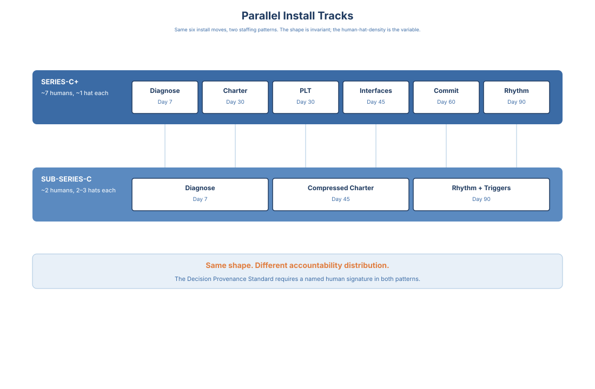
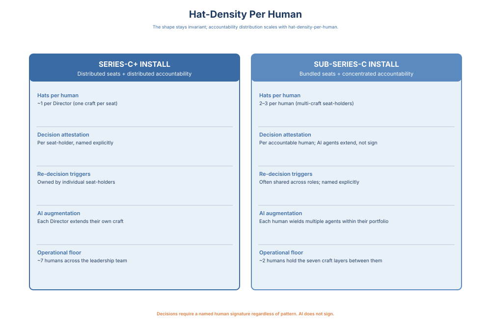

Vision to Value · 12 / 16
Appendix A: Installation Guide - A First-90-Days Sequence

The chapters made the argument. The appendices are the working artifacts that argument was building toward. The register changes here: where the chapters named why a decision system holds at scale, the pages that follow hand you the templates, sequences, and Charters to install one. Read the appendices the way you would read a kit, not a chapter. Each is meant to be opened on the day you do the thing it describes, not read straight through.
This appendix carries two install paths: one for Series-C+ companies with seven-seat Product Leadership Team (PLT) capacity (Section 1), and one for Sub-Series-C companies where the seven-seat PLT does not yet exist and a single compressed Charter holds the install (Section 2). Choose the path that matches your company stage. Both paths are first-class; the difference is which seats are filled, not which sequence is lighter.
The 30-60-90 Day Roadmap: A Reader-Facing Arc Through the First Ninety Days
The pages that follow walk the first ninety days of installing the Product Organization's decision system. Read this roadmap first if the install is what you are about to do, and the operational windows that follow it second when you reach each one in turn. The narrative arc and the operational windows describe the same work at different altitudes: the arc carries the why and the order; the windows carry the artifacts and the moves.
Week One: Read the landscape before you replace it. Change nothing in Week One. Map what is already installed, memorized as ritual, and missing, across existing cadences, decision records, the commitment register, and in-flight bets. Close Week One with a one-page state-of-the-decision-system note shared with your CEO and the PLT, not as a plan, as the baseline you will measure the next eighty-three days against.
Days 1-30: Install ONE Charter and name the PLT seats. Pick a single high-friction decision; the first-install candidates this book names are launch readiness, pricing exceptions, and platform intake; and fill out Appendix B's Decision Interface Charter Template in full. Not two Charters. Not four. One. Take it to the PLT as a commit, not a proposal. In the same window, name the seven seats that sit on the PLT by default: Product Management, Product Marketing, Business Operations, Business Development, Competitive Intelligence, Product Operations, and Value Realization.
Days 31-60: Install the cadence and the CPO-counterparty interfaces. By Day 30 the first Charter is running. Install the cadences the Charter lives inside, in order: the quarterly Portfolio Review (ninety minutes, Business Operations pre-read and Competitive Intelligence (CI) market read as gating inputs per Principle 6), the monthly Product-line Review, and the Launch Readiness Review rolled to the launch calendar. In the same window, name the four CPO counterparty interfaces (CPO–CTO on platform-engineering tradeoffs; CPO–CRO on launch readiness and quota-commitment alignment; CPO–CFO on continuation thresholds and forecast handoff; CPO–GC on regulatory and contractual exposure on the bet portfolio) and put each on a first-quarter cadence.
Days 61-90: Convert one Decision to a Commitment, and close the learning loop. Harden one Decision into a Commitment by attaching a resource: a hire released, funding moved, sequencing locked, an external promise made. A roadmap item that triggered hiring is a Commitment; a slide in a deck is not. Add outcome-evidence and market-evidence re-decision triggers to the first Charter so the system has at least one re-decision pathway running by Day 90. The first re-decision will not fire in this window; the trigger that catches it will.
Days 91-180: Observe at least one re-decision in flight, and install the executive interfaces. This window reads at narrative-arc altitude, not operational-detail altitude; the windows above carry the operational territory through Day 90. What follows is the shape of the second-ninety-days arc, not the playbook for it. This is when the re-decision triggers installed at Day 61-90 are actually tested. If none of your bets ever fall outside the guardrails you set, you either set the guardrails too wide or you are not measuring the real outcome. The system is only working when it catches its first miss, and the first miss is the point of installing the triggers. This is also the window for the interfaces that compound executive trust rather than internal coherence: the CEO interface, the Board Bet Review Charter with the CEO as co-signer, the CFO reconciliation on continuation thresholds and forecast handoff, the General Counsel extensions on regulatory accountability, and the COO interface where the product organization meets the rest of the business. The Day-91-180 arc is when the executive interfaces become as routine as the PLT interfaces installed in the first ninety days.
The five windows above carry the install at narrative altitude. The rest of this appendix carries the same install at operational altitude: the artifacts to inventory in Week One, the Charter template to copy in Days 1-30, the cadence stub to publish in Days 31-60, the re-decision triggers to wire in Days 61-90, and the executive interfaces to ramp in Days 91-180. Read on if the install is in front of you. Return here when you are inside a specific window.

Series-C+ Install Path: The Six Moves of the First Ninety Days
This guide is for a newly-seated CPO, VP Product, or Director of Product Operations inheriting a functioning-but-drifting product organization, ready to install the Decision Interface Charter, the operating cadence, and the observability signals this book describes. It assumes you have read Chapters 4 and 5, have the Charter template open in front of you, and are about to make the most common first-ninety-days mistake: trying to install the whole blueprint at once. The premise below is that installation is core-tier work, that a new leader's first quarter is about sequencing rather than standing, and that the right first move is to change nothing at all.
The Six Moves of the First Ninety Days
The time windows below are the itinerary. These six moves are the map. Move 1 lives in Week One. Moves 2 and 3 land in Days 1-30. Moves 4 and 6 land in Days 30-60. Move 5 is the hinge from Day 60 to Day 90. Read the moves first; walk the windows second.
- Read the landscape before replacing it. Map what is already installed, memorized as ritual, and missing, across existing cadences, decision records, the commitment register, and in-flight bets. Close Week One with a one-page state-of-the-decision-system note, not a plan. Install nothing yet.
- Install ONE Charter on one decision. Pick a single high-friction decision (launch readiness, pricing exceptions, or platform intake are the first-install candidates this book names), fill out Appendix B's Decision Interface Charter in full, and take it to the PLT as a commit, not a proposal. Not two Charters. Not four. One.
- Name the PLT and its seats. Name the seven seats that sit on the PLT by default, Product Management, Product Marketing, Business Development, Competitive Intelligence, Business Operations, Product Operations, and Customer Success with Value Realization, and seat each one with a director-altitude owner. The PLT is the forum the Charter lives inside; naming the forum before the forum names itself is the move that prevents the Charter from being run by whoever happens to be in the room.
- Name the four CPO interfaces. Name the executive interfaces the product organization lives inside: CPO to CTO on the platform envelope, CPO to CRO on commercial motion mix, CPO to CFO on the capital envelope, CPO to CMO on the brand-calendar boundary. Record each one at the altitude it decides. These are not consultative pairings; they are the altitudes at which Chapter 7 says executive trust compounds or does not.
- Convert one Decision to a Commitment. Harden one Decision into a Commitment by attaching a resource: a hire released, funding moved, sequencing locked, an external promise made. A roadmap item that triggered hiring is a Commitment; a slide in a deck is not. This is the move that converts the Charter from analysis into architecture.
- Install the Portfolio and Product-line Reviews. Put the Portfolio Review on the calendar (quarterly, ninety minutes, Business Operations pre-read and CI market read as gating inputs), the Product-line Review on the calendar (monthly, sixty minutes), and the first re-decision trigger on the calendar with a named outcome-evidence threshold and a named market-evidence threshold. When the first trigger fires, run the re-decision as a named event against the documented trigger, not as an ad-hoc conversation. That first clean re-decision is the moment the decision system earns its license.
The windows below walk these six moves at operational altitude; the Conclusion 30-60-90 pairs at narrative altitude.
Week One - Read the Landscape Before You Replace It (Move 1)
This window lands Move 1 (Diagnostic) alone. Move 2's Charter install is referenced here as a pointer to Days 1-30; do not install anything in Week One, the diagnostic is the move. Narrative pair: Conclusion 30-60-90 Week One paragraph.
Do not change anything in Week One. The temptation will be large, especially if the dysfunction is visible enough that your CEO hired you to fix it. Resist it. You do not yet know what is already installed, what is memorized-as-ritual, and what depends on a person who is about to leave. Map what exists before you replace anything.
Four artifacts to inventory before you touch the calendar. First, the existing cadences - every recurring forum with a product dependency, and for each one the question: is this forum making decisions, or is it running status? Use the Canonical Rituals table in Appendix B as your inventory frame. Second, the existing decision records, if any - a search for the last twelve months of PRDs, launch readiness memos, portfolio reviews, and kill decisions. The test: can you find a decision made in Q2 of last year in under thirty seconds? If not, the archive is missing and Product Operations work is ahead of you. Third, the commitment register - what the organization currently believes it has committed to. Roadmap, board deck, top-of-funnel promises, contractual commitments to lighthouse customers. You are looking for mismatches between what three different leaders think is committed. Fourth, the in-flight bets - which bets are live, who owns them, what T+2 / T+6 / T+12 indicators are instrumented. If the instrumentation is absent, the re-decision triggers the book talks about cannot fire.
Close Week One with a single written document: a one-page state-of-the-decision-system note. What is installed, what is memorized, what is missing, what is drifting. Share it with your CEO or CPO and the PLT, not as a plan, as a read. This is the last document you will produce before the pressure to install starts.
Days 1-30 - Install ONE Charter and Name the PLT Seats (Moves 2 and 3)
This window lands Moves 2 (Charter) and 3 (PLT). The two moves share the window deliberately: the Charter is the artifact, the PLT is the forum the artifact lives inside, and naming the forum before the Charter arrives prevents the Charter from being run by whoever happens to be in the room. Move 4 (Interfaces) is referenced here as a pointer to Days 30-60; do not name the CPO-counterparty interfaces yet, the first Charter is the priority. Narrative pair: Conclusion 30-60-90 Days 1-30 paragraph.
The newly-seated leader's biggest mistake is installing the Charter everywhere at once. Pick one decision. The right first decision has three properties: it is visibly broken (someone will thank you for fixing it), it is high-stakes enough that the PLT will care about the outcome, and it is bounded enough that you can instrument it in thirty days. Three candidates the book has already named: launch readiness for the next material launch, pricing-exception authority, or platform intake. For a new VP Product inheriting a shipping-velocity problem, launch readiness is almost always the right first install. For a CPO inheriting a commercial-integrity problem, pricing exceptions is the right first install. For a Product Operations director installing the operating layer below an existing CPO, platform intake is usually the cleanest first win because it is the cadence with the most visible queue pathology.
Fill out Appendix B's Decision Interface Charter for that one decision. Fill every field. Do not skip the required-inputs grouping; the three-tier structure (core / empowerment / execution) is not decorative - it is what converts the Charter from a process document into an organizational architecture. Name the single accountable owner. Name the explicit "say no" boundaries. Write at minimum one outcome-evidence re-decision trigger and one market-evidence re-decision trigger. The re-decision triggers are the part most first-time installers under-specify; they are also the part that determines whether the Charter does any real work twelve weeks from now.
Name the Product Leadership Team and its seats in the same window. Seat the seven seats that sit on the PLT by default: Product Management, Product Marketing, Business Development, Competitive Intelligence, Business Operations, Product Operations, and Customer Success with Value Realization. Seat each one with a director-altitude owner, not a coordinator, not a proxy, not a "someone from that team will attend." The Product Management seat is the Director of Product Management (PM-Director), not the VP Product — the VP operates one altitude above, as the executive counterpart to the CPO; the PM-Director is the director-altitude peer who sits on the PLT and runs the cross-team PM coordination forum. The PLT is the forum the first Charter runs inside, and the forum's composition is load-bearing. A PLT seated at coordinator altitude cannot hold a re-decision; a PLT with gaps (no Business Development seat, no Competitive Intelligence seat, no Value Realization seat) cannot gate the sensor reads Principle 6 requires. Name the forum before the forum names itself; if you arrive at the first Charter review and the Business Operations director is represented by a senior analyst, the Charter is already losing.
Then take the Charter to the PLT as a commit, not a proposal. You are not asking for feedback on whether to install a Charter on launch readiness. You are showing the PLT the Charter you are installing, asking for input on the required-inputs list and the re-decision triggers, and scheduling the first cadenced meeting. "Installed" means: the owner is named, the forum is on the calendar with a pre-read deadline, the decision artifact location exists, the required-inputs list is explicit, the re-decision triggers are written down. If any of those five fields is vague, the Charter is not installed. It is decoration.
One rule for this first thirty days: do not install the Charter on any other decision. Not platform intake, not pricing exceptions, not portfolio sequencing. A second install in Week Three competes for the same limited organizational attention the first install needs to actually land. You are buying credibility with the first install so you can spend it on the second.
Days 30-60 - Name the CPO-Counterparty Interfaces and Install the Cadence (Moves 4 and 6)
This window lands Moves 4 (Interfaces) and 6 (Rhythm). Move 4 runs in parallel with the cadence install rather than after it; the interfaces are the altitude the cadence operates inside. Move 5 (Commitment) is referenced here as a pointer to Days 60-90. Move 3's PLT seating (from Days 1-30) is the forum the cadence runs through. Narrative pair: Conclusion 30-60-90 Days 31-60 paragraph.
By Day 30 the first Charter is running. Now name the CPO-counterparty interfaces the product organization lives inside, install the cadence the Charter lives inside, and wire the observability signals that will tell you whether the operating layer is healthy.
Name the four CPO-counterparty interfaces at altitude. CPO to CTO on the platform envelope, where reliability posture, architectural-debt retirement sequencing, and build-buy-OSS at the platform layer are decided as joint calls rather than escalation resolutions. CPO to CRO on commercial motion mix, where pricing exception authority, enterprise deal concession structure, and expansion-motion design are decided against the customer-promise register. CPO to CFO on the capital envelope, where portfolio sequencing against the bet ledger and the mid-cycle re-allocation triggers are decided before the board deck is written. CPO to CMO on the brand-calendar boundary, where launch-tier classification and the corporate-narrative synchronization are decided. Record each interface at the altitude it decides. These are not consultative pairings; they are the altitudes at which Chapter 7 says executive trust compounds or does not. An unnamed interface is one the organization narrates around by ad-hoc escalation; a named interface is one that carries its own cadence and its own record.
Install three cadences, in this order. First, the Portfolio Review - quarterly, ninety minutes, VP Product or CPO as owner, Business Operations pre-read and CI market read as required gating inputs per Principle 6. If either pre-read is absent or stale, the review cannot adjourn with a continue decision on the bets those sensors cover. Second, the Product-line Review - monthly, sixty minutes, Group PM or Director PM as owner, bet-level re-decision as the output. This is the cadence that catches over- and under-performance before it becomes a portfolio-review problem. Third, the Launch Readiness Review - which your first Charter already instantiated - rolled out to every material launch on a T-6 / T-14 rhythm.
Then wire the observability. Principle 6 names five signals for the operating layer itself, separate from the signals on the bets inside it: decision latency, commitment drift, cadence adherence, charter decay, and re-decision integrity. Product Operations operates these. You consume them at Portfolio Review. The split matters: cadence adherence and charter decay are telemetry on the machinery Product Operations runs; share-of-decisions-with-measured-outcomes is a sensor read Business Operations delivers. Do not collapse the two tiers. A mature Portfolio Review reads both.
By Day 60 the first Charter has run twice, the four CPO-counterparty interfaces are named with at least one decision recorded against each, and the cadence is running. You are seeing whether the required-inputs list is actually being delivered on time, whether the re-decision triggers are documented, and whether the pre-read discipline is holding. Any of those three breaking is an early signal that the install needs reinforcement before you expand it. The stage is now set for Day 60 to 90, where the first Decision hardens into a Commitment and the first re-decision fires.
Days 60-90 - Convert one Decision to a Commitment (Move 5)
This window lands Move 5 (Commitment). Move 6's first re-decision trigger also fires here, exercising the cadence installed in Days 30-60. Earlier moves (1, 2, 3, 4) are referenced as pointers to the windows where they landed; no new Charter installs happen here beyond the two or three hardening targets named below. Narrative pair: Conclusion 30-60-90 Days 61-90 paragraph.
This is the hinge from Decision to Commitment. Pick one Decision from the first Charter's output and harden it into a Commitment by attaching a resource. A hire released against the bet. Funding moved into the sequencing the Charter named. An external promise made (a customer commitment, a board milestone, a public launch date) that makes reversal costly. A roadmap item that triggered hiring is a Commitment; a slide in a deck is not. This is the move that converts the Charter from analysis into architecture. Without it, the Charter reads as a well-structured opinion. With it, the organization has committed to a direction that now carries consequences.
Now expand the Charter footprint. Identify the two or three in-flight bets that most need Charter discipline - usually the ones with the most ambiguous ownership, the most-promised outcomes, or the largest capital commitment. Write Charters for them. Wire their T+2 / T+6 / T+12 indicators into the Portfolio Review. Run the first sensor-compulsion check: is the Business Operations pre-read actually arriving as a gating input, or is it being narrated at the meeting? Is the CI market read landing in the Charter's required-inputs slot, or is it a PMM-framed interpretation of the market? The sensor-compulsion protocol from Principle 6 is where most decision systems quietly fail. The fix is not rhetorical; it is structural. If the sensor read did not gate the decision, the decision was not re-decided, it was re-confirmed.
Somewhere in this window, the first re-decision trigger should fire on an existing bet. When it does, run the re-decision as a named event, not as a "keep shipping" default. The re-decision is the single highest-leverage moment in the first ninety days. If you run it with discipline - against the documented trigger, with the required inputs, in the named forum - the organization learns that re-decisions are structural. If you run it as an ad-hoc conversation, the organization learns the triggers are decorative. This first clean re-decision is where the cadence installed in Days 30-60 earns its license.
Quarter 1 Close - The First Outcome Review
At the ninety-day mark, the Portfolio Review runs for the first time under the full discipline. T+6 and T+12 checkpoints begin to fire on the older bets. This is where Value Realization's signature-decision authority operationalizes: bet-invalidation calls at T+6 and T+12, not as a research exercise, but as a named decision with a named owner. If Value Realization is not yet installed as a seat, this cadence is where you name the person who will hold it.
The first bet-invalidation call is the moment the decision system earns its license. It is also the moment the CEO finds out that the system you have installed will stop bets. Do not soften it. The book's claim that naming a bet invalidated is a specific admission, in front of specific people, about a specific decision - that claim cashes here, in front of your PLT and your CEO, in your first quarter. Run it once cleanly and the organization watches the system work. Run it twice cleanly and the system is installed.
Common Failure Modes
Four failure modes catch new leaders in their first ninety days. Name them before they happen.
Install-everywhere-at-once. The new leader installs Charters on launch readiness, platform intake, pricing exceptions, and portfolio sequencing simultaneously in the first sixty days, runs out of organizational attention by Day 45, and has four half-installed charters nobody runs. The fix is the sequencing rule above: one Charter in the first thirty days, three by Day 90. Not seven.
The CEO who doesn't want a decision system. The CEO hired you to ship faster and reads your Week One note as evidence you are about to slow things down by adding process. The failure mode here is installing the system despite the CEO and being reversed at the first friction point. The right move is to install the Charter on a decision the CEO cares about the outcome of, not the process of. If the first Charter's first re-decision produces a visibly better commercial outcome, the CEO learns the system ships value. If you install the Charter on process hygiene instead, the CEO learns the system is overhead.
Product Operations installed as admin, not infrastructure. A common failure at the coordinator-altitude installation: Product Operations is seated as a scheduler and note-taker rather than as the function that runs the operating calendar, the archive, and the machinery telemetry. The Chapter 5 role block names this explicitly: at scale, Product Operations is held by a director or VP, not a coordinator. If the seat is coordinator-altitude, the decision system cannot be installed from it; the right move is to install the Charter from your own seat and escalate the Product Operations mandate as a Q2 decision.
PLT composition without empowerment-director empowerment. The PLT exists on paper but the Business Operations and CI directors do not deliver sensor reads as gating inputs - they deliver them as slides in a PMM-narrated deck. The sensor read enters the room already narrative-washed. The failure mode is that the Portfolio Review reaches a continue decision on a bet whose sensor reads would have forced a stop if they had landed as evidence. The structural fix is the Appendix B requirement: sensor reads are gating inputs, not consultative commentary. If the empowerment-director cannot deliver the read directly to the decision, the Charter is not installed.
When to Walk Away
Some organizations cannot host this blueprint. Three conditions, in combination, are a walk-away signal. First, a CEO who treats product as a function rather than a system and will not accept a cadence that includes stop decisions. Second, a PLT that cannot be convened - no standing seats for empowerment-tier directors, no cross-functional decision forum, no willingness to install one. Third, a capital-allocation culture that treats re-decisions as signs of weak commitment rather than as the learning loop. Any single condition is a tough install. The combination is unworkable, and the honest move is to name it in the first sixty days and let the CEO decide whether the conditions can change. The book's core claim - that the Product Organization is custodian of the decision system across the company, installable as architecture rather than inherited as culture - depends on an organization willing to be operated on that way. When it is not, the right move is not a heroic install. It is an honest assessment.
A First-90-Days Sequence for the Director Who Is Not Yet on the PLT — or Is, and Wants to Install the Discipline at Her Altitude
The six moves above are written from the executive seat: a newly-seated CPO, VP Product, or Director of Product Operations installing the decision system top-down. Most readers of this book will not arrive in that seat. Many will arrive at the seat one altitude below — the Director of Product Management — and will read the executive sequence as a description of work being done above them, against a calendar they do not control, with hires they cannot release. That reader needs her own ninety days, walked at her altitude, against the levers her seat actually holds. This section is for her.
The Director-altitude installer comes in two variants and the sequence works for both. The first is the PM-Director growing into PLT membership: she does not yet hold the Product Management seat on the PLT, but the cohort altitude is hers and the Charter discipline travels there now. Installing it at the Director cohort altitude builds the muscle she will carry into the PLT seat when it opens, and gives the executive layer above her a candidate-readiness signal that is structural rather than reputational. The second is the PM-Director who already sits on the PLT (per the Reading A lock named in Chapter 3 and reinforced in Days 1-30 above): she holds the PLT seat and wants to install the discipline at her altitude regardless of whether the CPO has installed it at hers. Both readers run the same sequence; the second runs it inside an already-functioning PLT, the first runs it as preparation for the PLT she will join. The install path is the same either way.
The Director-altitude install walks three Charters in ninety days, not six executive moves. The three are the Charters a Director of Product Management most likely owns from her seat: the Cross-Team Tradeoff forum (the new PM-Director Charter in Appendix C is the worked instance), the PM-leveling calibration cycle (anchored to the talent-architecture passages in Chapter 6 and the Chief-People-Officer-CPO talent charter), and the platform-intake handshake (anchored to the Decision Interfaces chapter and the Platform Intake Council ritual in Appendix B's Canonical Rituals reference). None of the three requires PLT chairmanship to install. All three compound across a Director cohort once installed. The sequence below walks each at 30 / 60 / 90 day milestones, against the same one-Charter-at-a-time discipline the executive sequence enforces.
Pick one of the three to lead with. As with the executive install, the temptation is to install all three at once, and the failure mode is identical. Pick the Charter whose decision surface is most visibly broken in your cohort right now. If your PM cohort has cross-line tradeoffs escalating by default to the VP-Product, lead with the Cross-Team Tradeoff forum. If your last calibration cycle produced promotion exceptions the comp committee quietly reversed two quarters later, lead with PM-leveling calibration. If your PM-line requests are sitting in a platform-intake queue nobody sequences, lead with the platform-intake handshake. Install one in the first thirty days; the second by Day 60; the third by Day 90. A second install in Week Three competes for the same limited cohort attention the first install needs to land. You are buying credibility with the first Charter so you can spend it on the second.
Days 1-30 — Read the Cohort, Then Install ONE Charter
Do not change anything in the first ten days. Map what your Director cohort already runs. Inventory the existing cross-team forums, the last twelve months of PM cohort decision records (the same thirty-second-reconstructibility test from Chapter 4 Toolkit applies at this altitude), the in-flight cross-line tradeoffs your cohort is currently absorbing into the VP-Product calendar, and the open PM requisitions whose rubrics were authored after sourcing started. Close the read with a one-page state-of-the-Director-altitude note. Share it with peer PM-Directors and your VP-Product, not as a plan, as a read.
By Day 30, install the first Charter. If your lead is the Cross-Team Tradeoff forum, fill out the new PM-Director Charter from Appendix C — the convening rule, the seat roster, the bi-weekly cadence, the pre-read discipline, the bounded decision rights, the re-decision triggers. Take it to your peer PM-Directors as a commit, not a proposal. The first forum convening is a working session: you walk the Charter, the cohort ratifies the convening rule and the chair-rotation, and you publish the pre-read template before the next cycle. If your lead is PM-leveling calibration, the install is a calibration forum on the calendar with a quarterly cadence, the four-input PM performance record from Chapter 6 as the gating input, and the Chief People Officer or People Business Partner as a co-decider against the comp-band. If your lead is the platform-intake handshake, the install is a Charter co-authored with the platform-engineering Director naming the intake cycle, the per-cycle commitment, the "not this cycle" list, and the re-decision trigger if the platform capacity envelope changes mid-cycle. One Charter. One decision surface. Installed by Day 30 means: the owner is named, the forum is on the calendar with a pre-read deadline, the decision artifact location exists, the required-inputs list is explicit, the re-decision triggers are written down. If any of the five fields is vague, the Charter is not installed.
Days 30-60 — Run the First Charter Twice, Install the Second
By Day 30 your first Charter is on the calendar. By Day 60 it has run twice. The two-cycle test is what tells you whether the Charter is installed or only present: did the second cycle's decisions reference the first cycle's record? Did the pre-read discipline hold? Did at least one re-decision trigger fire on a tradeoff the first cycle had absorbed too early? If the second cycle ran without referencing the first, the Charter is decoration. The fix is not rhetorical; it is the same hygiene rule from the executive install: the decision-record location must be findable in thirty seconds, Product Operations (or the cohort itself, where Product Operations is not yet seated at Director altitude) audits findability monthly at the Director altitude, and the second cycle's pre-read explicitly references the first cycle's open re-decision triggers.
Now install the second Charter. The same one-cycle-to-install discipline applies: by Day 60 the second Charter is installed (owner named, forum on calendar, pre-read landed, decision artifact location exists, re-decision triggers written) but it has not yet run twice. That two-cycle test happens in Days 60-90. Do not install the third Charter yet. The cohort's attention is the limiting factor at this altitude as much as it is at the executive altitude; the second install in Days 30-60 is competing with the first install's second-cycle stress test. A third install at Day 60 produces the install-everywhere-at-once failure mode at the cohort altitude — three half-installed Charters nobody runs.
Days 60-90 — Install the Third, Convert ONE Decision to a Commitment, Run the First Re-Decision
By Day 60 the first Charter has run twice and the second is installed. In Days 60-90, install the third Charter (same one-cycle install discipline), and run the first re-decision trigger on the first Charter as a named event against the documented trigger. The first clean re-decision at the Director cohort altitude is the moment the install earns its license — the cohort watches a tradeoff that was resolved in Cycle 1 reopen in Cycle 4 because a re-decision trigger fired, get rerun against the documented input set, and either re-confirm or revise. If you run it as an ad-hoc reopen, the cohort learns the triggers are decorative. If you run it cleanly, the cohort learns re-decisions are structural and the Charter discipline becomes load-bearing.
Convert one decision to a commitment in this window. At the Director altitude, "commitment" looks different than at the executive altitude — you do not release hires, you do not move funding. What you do is harden a cross-team tradeoff resolution into a cohort-level commitment by attaching a resource: a sequencing change locked across two product lines, an external promise made (a customer-facing commitment from the cross-line resolution, a board-deck entry, a PMM positioning lock that depends on the resolution), or a hire-rubric update that ratifies a leveling-calibration call across the cohort. A cohort-level commitment carries the same property the executive-altitude commitment does: the cohort cannot reverse it without paying a visible cost. That visibility is what converts the Charter from a Director-cohort process document into a piece of organizational architecture the layer above and the layer below both observe.
By Day 90 the three Charters are installed, the first has run four cycles with one clean re-decision, the second has run twice, the third has run once, and one cohort-level commitment has hardened against a cross-team tradeoff resolution. The Director-altitude decision system is installed. The PLT-altitude decision system above you is its own install; the team-altitude decision system below you is its own install; the Director cohort altitude is the one you own, and ninety days from a clean state is what it takes to install it.
When the Director Is on the PLT, Run This in Parallel With the Executive Install
If you already sit on the PLT (per the Reading A lock from Chapter 3), this Director-altitude install runs in parallel with whatever executive install your CPO or VP-Product is running. The Cross-Team Tradeoff forum at the Director cohort altitude is a different forum than the Portfolio Review at the executive altitude — they interface but they do not substitute. You bring the cross-team tradeoff forum's open re-decision triggers to the Portfolio Review as inputs; the Portfolio Review surfaces capital-reallocation tradeoffs to your forum as escalations. The two cadences run in parallel, not in series. Your install does not wait on the executive install above you, and the executive install does not displace the cohort install you own. The Charter discipline scales to all altitudes; running it at yours is the work the Director seat carries regardless of whether the seats above and below have run it at theirs.
What Breaks the Director-Altitude Install
Three failure modes catch Director-altitude installers in the first ninety days, and each is a cohort-altitude version of the executive failures named earlier in this appendix.
Install-everywhere-at-once at the cohort altitude. The Director installs all three Charters in the first thirty days, runs out of cohort attention by Day 45, and has three half-installed Charters nobody runs. The fix is the one-Charter-at-a-time sequence above: one by Day 30, two by Day 60, three by Day 90.
The peer Director who treats Charter discipline as overhead. A peer PM-Director on the cohort treats the Charter as governance theater and absorbs cross-line tradeoffs into bilateral conversations rather than the forum. The Charter loses cohort coverage and the install reverses. The structural fix is the cohort-level ratification at the convening cycle: the Charter is a cohort artifact, not the chairing Director's preference. If the cohort ratifies the Charter and a peer Director still routes around it, the chairing Director surfaces the routing-around behavior at the next quarterly read with the VP-Product as a counterparty-specific re-decision trigger. The fix is structural, not relational.
The VP-Product who absorbs cohort decisions upward by calendar default. The Cross-Team Tradeoff forum decides a cross-line resolution; the VP-Product pulls the same tradeoff into the Portfolio Review the following month and reopens it without a re-decision trigger having fired. The cohort learns the forum's decisions do not stick. The fix is the bounded exit named in the PM-Director Charter: the chairing PM-Director records the override, the Charter returns to the cohort for re-authoring, and the VP-Product is informed at the next quarterly read that the override is incompatible with the cohort-altitude decision rights this Charter names. The first time this happens the Charter is being tested; the second time it happens the install is failing.
The Director-altitude install path is not a smaller version of the executive install. It is the install at the altitude the rest of the decision system depends on most invisibly. The CPO seat installs the executive interfaces; the Director cohort altitude installs the cross-team forums, the leveling calibration, and the platform-intake handshake those interfaces consume. Without the Director-altitude install, the executive interfaces above run on cohort outputs the cohort never decided and never recorded. With it, the executive interfaces run on a Director cohort whose decisions are reconstructible, whose re-decisions are clean, and whose commitments harden at the altitude they originate from. The substance of the decision system holds at this altitude. The seat is honored. The install is the work the cohort owes itself.

Sub-Series-C Install Path: The Compressed Charter and the Path to Series-C+
This guide is for a founder-CEO, head of product, or two-person product-and-business operating pair running the product organization at sub-Series-C scale, ready to install the same decision system the Series-C+ Install Path above describes, at the altitude their company actually operates. The premise below is that the principles of Vision to Value apply at every company size; what scales with stage is not whether the shape applies, but how the seven functional accountabilities are distributed across the humans who hold them. At Series-C+ the seven seats are seated, one per director-altitude human. At sub-Series-C they are not. The accountabilities are still held; the same humans hold more of them; and the install order is shaped by that hat-density rather than by which seats are missing.
The Reframe — Hat-Density, Not Missing Seats

The Series-C+ Install Path describes seven seats on the PLT, one per director-altitude human, each carrying a single functional accountability cleanly. That distribution is real at scale and the Series-C+ install is shaped to it. At sub-Series-C scale the same seven functional accountabilities still exist — Product Management, Product Marketing, Business Development, Competitive Intelligence, Business Operations, Product Operations, and Customer Success with Value Realization — but a single human typically holds three or four of them at once. A founder-CEO who decides launch readiness, pricing exception authority, capital-allocation re-decisions, and the customer-promise register is not holding zero seats. The founder-CEO is holding four hats. The install premise is the same; the load-distribution is different.
Hats are held by humans; AI extends each hat from inside the seat. The Decision Provenance Standard — published alongside this book — defines a decision as an artifact a named human signs and attests to. AI agents can analyze, draft, prepare, and propose; signing the decision remains a human seat-holder's accountability. The Standard makes the claim structurally; the install layer operationalizes it. AI agents do not wear formal hats in the accountability distribution below; they extend the leverage of the humans who do. See Decision Provenance Standard v5.0, Layer 4 attestation, for the eight-field schema and verbatim language.
A consequence worth naming. At higher hat-density, each functional accountability runs at lower discipline depth. The pricing-exception call a founder makes wearing four hats does not get the full Business Operations pre-read a director-altitude Business Operations seat would deliver; the funnel sensor read does not arrive with the depth a seated Competitive Intelligence director would provide. The principles still apply — sensor reads still gate decisions, re-decision triggers still get written down — but the operational expression compresses. This is a tradeoff the Sub-Series-C install discloses, not a risk it warns against. The install holds at sub-Series-C scale; it does not hold at the depth a Series-C+ install holds.
There is an operational floor. Below roughly two humans holding distinct portfolios, the install runs as principles-led decision discipline rather than as structured accountability allocation. A single human cannot carry seven functional accountabilities and run a standing forum against themselves. At that altitude the install is what Chapter 8's principles already prescribe — write decisions down, name the assumption, instrument what you can — and the structural install in this section becomes available when the second human is hired.
The Sub-Series-C Reader and the Worked Example
Two readers find themselves on this path. The first is a founder-CEO with a head of product, three to fifteen humans, working through pre-PMF or early commercial motion. The second is a head of product reporting to a founder-CEO at a Series A or early Series B, with three to ten humans across product and adjacent functions, the founder still holding capital-allocation and customer-promise accountability across the company. Both share the same structural reality: seven functional accountabilities, two to six humans holding them, one standing forum that runs decisions.
A concrete example. A business-focused founder, wearing Business Operations and Competitive Intelligence and Product Marketing hats, signs the Layer 4 attestation on the pricing-decision record; an AI agent drafted the comparable-pricing analysis and the competitor-positioning brief that fed the decision; both feeds appear in the Layer 2 audit hook. A product-evolution operator, wearing Product Management and Product Operations and Value Realization hats, runs the same pattern on customer-outcome decisions — the AI agent drafts the cohort retention read and the activation-funnel diagnostic; the operator reviews, refines, signs. Two humans, six hats, AI extension inside each portfolio. The decision system at this altitude is not seven-seat-architecture in miniature. It is two-operator architecture, with named accountability concentrated in the human seat-holders and AI leverage extending each portfolio's analytical bandwidth.
Three Moves of the First Ninety Days
The Sub-Series-C install runs in three moves over ninety days, not six. Move 1 lives in Week One. Move 2 lands by Day 45. Move 3 lands by Day 90. The compressed Charter is the artifact the three moves install around.
Move 1. Read the standing forum before changing it. The founder-CEO and head of product already meet to make decisions. Map what that forum decides cleanly, what it decides under pressure and revisits later, and what it never quite decides because no one named that the decision was on the table. Close Week One with a one-paragraph note: what the forum decides, what it does not, where the next material decision will surface. Install nothing yet.
Move 2. Install the compressed Charter on one decision. Pick the single decision the team is making badly — most often launch readiness or the pricing-exception call — and fill out the six-field compressed Charter for it. By Day 45 the Charter has run twice against the standing forum and the first re-decision trigger has been written down even if the team cannot yet instrument it.
Move 3. Run the second cycle and write down the first re-decision trigger. By Day 90 the Charter has run four or five times, the founder-CEO has signed at least one Layer 4 attestation as the named accountable owner, and the standing forum has reopened at least one prior decision against a documented trigger — not because the wind shifted, but because the trigger fired. The second Charter does not install yet. The expansion to a Charter network and a seven-seat PLT waits until the second product director or peer-function lead is seated. The discipline is to install the next move, not the move three stages ahead.
Week One — Read the Standing Forum Before You Change It
Do not install the Charter in Week One. The temptation will be larger than at Series-C+ scale because the founder-CEO is in the room and one conversation can install or reverse a discipline. Resist it. The standing forum at this altitude already decides things; what is missing is the recording, the attestation, and the re-decision trigger — not the forum itself.
Four artifacts to inventory before you touch the calendar. First, the existing standing forum — usually a weekly or bi-weekly meeting between the founder-CEO, the head of product, and one or two adjacent leaders. What it decides cleanly. What it defers. What it routes around. Second, the last six months of material decisions — pricing changes, launch commitments, hires released, customer-promise commitments — and where the record of each lives. The thirty-second-reconstructibility test from Chapter 4 still applies. If a material decision from three months ago cannot be found in thirty seconds, the archive discipline is missing and that is the second install. Third, the AI-extension footprint already in use — what the founder-CEO and head of product are already drafting with AI assistance, what is being analyzed, what is being proposed. The Layer 2 audit-hook discipline begins by naming the feeds already in flight. Fourth, the customer-promise register — what the company believes it has committed to, where commitments live, who can authorize a new one.
Close Week One with a single paragraph: what the standing forum decides cleanly, what it does not, where the next decision will surface, and which hat each operator is wearing on it. Share it with the founder-CEO and the head of product, not as a plan, as a read. This is the last document produced before the install pressure starts.
Days 1-45 — Install the Compressed Charter on One Decision
Pick one decision. The right first decision at sub-Series-C scale has three properties: it is visibly broken (the team will thank you for fixing it), it is bounded enough that the standing forum can run it twice in forty-five days, and it carries enough commercial consequence that the founder-CEO will take the Layer 4 attestation seriously. Launch readiness is the most common right first install — the decision recurs on a cadence, the inputs are nameable, and the failure mode is visible. The pricing-exception call is the second most common.
Fill out the compressed Charter. Six fields. Decision: what is being decided, who owns it, when it is decided, where the record lives. Context and constraints: two or three lines on what the decision is responding to. Inputs: a single list of who must say something before the decision is made — usually three to five names at this scale, not three tiers of seats. The founder belongs on this list at sub-Series-C scale because the founder's capital-allocation and customer-promise authority are load-bearing inputs to the decision; this is not a deferral upward, it is a recognition that the founder holds hats that feed this decision. Decision rule: what good-enough evidence looks like, what the default is if inputs are missing, and the explicit "say no" boundaries. Re-decision triggers: one outcome-evidence trigger and one market-evidence trigger, written down even if the team cannot yet instrument either fully. Learning loop: when the decision gets reviewed and what closes it.
Name the AI-extension footprint inside the Inputs field. If the head of product is using an AI agent to draft the comparable-pricing analysis or the launch-readiness scorecard, name that in the Inputs list. The Layer 2 audit-hook records the feeds; the Layer 4 attestation binds the named human to the call. This is not optional bookkeeping at sub-Series-C scale; it is the discipline that prevents the most common sub-Series-C failure — the founder signing decisions an AI proposed without surfacing that the proposal was AI-drafted in the audit trail.
Take the Charter to the standing forum as a commit, not a proposal. The forum ratifies the Charter, runs the next instance of the decision against it, and produces the first decision record with a Layer 4 attestation. By Day 45 the Charter has run twice and the founder-CEO has signed the attestation field at least once.
Days 45-90 — Run the Charter Twice and Wire the First Re-Decision Trigger
By Day 45 the Charter is on the calendar. By Day 90 it has run four or five times. The two-cycle test applies at this altitude exactly as it does at Series-C+: did the second cycle's decisions reference the first cycle's record? Did the pre-read discipline hold even when the founder-CEO arrived without reading? Did at least one re-decision trigger fire on a decision the first cycle had absorbed too early?
The load-bearing question at this altitude is whether the founder-CEO can sit inside the forum as an input-holder on the decision rather than as the convening authority over it. The founder is in the Inputs list because of the hats they wear. They are not the decision-maker on every Charter that runs at this scale; the head of product may be the named accountable owner on launch readiness, the founder on pricing-exception authority. Which hat decides which Charter is a structural choice the standing forum makes explicit at Charter install time, not a question that gets resolved meeting by meeting. If the forum cannot make that choice cleanly — if every Charter defaults to founder-as-decider regardless of the hat the decision belongs to — the install is reversing.
Write down the first re-decision trigger even when the team cannot instrument it. A trigger that reads "if pricing-exception velocity exceeds ten exceptions per quarter, reopen the pricing Charter" is a real trigger at this scale even if no one is yet counting exceptions cleanly. The discipline of writing it down is what creates the surface for the second-install instrumentation later. A Charter without re-decision triggers, even uninstrumented ones, drifts into "we'll revisit when something feels off" — which is the failure mode the Charter exists to prevent.
Quarter 1 Close — The First Re-Decision
At Day 90, the standing forum runs its first formal re-decision. There is no Portfolio Review yet at this altitude — the forum that runs the Charter is the same forum that runs the re-decision. There is no Value Realization seat yet; the re-decision authority lives with the head of product on customer-outcome decisions, with the founder-CEO on capital-allocation decisions. The Layer 4 attestation is the discipline that makes the re-decision count: the named human seat-holder signs the re-decision record against the documented trigger, with the AI-extension feeds named in the Layer 2 audit hook.
The visible signal at Quarter 1 Close is that the forum reopens a decision against a written trigger rather than re-debating the original call. The trigger fired; the inputs got reread; the decision was either re-confirmed against new evidence or revised. Either outcome is a clean re-decision. The failure mode is the forum reopening the decision because the wind shifted and re-arguing it from scratch — which the Charter is structurally designed to prevent.
Common Failure Modes
Four failure modes catch sub-Series-C installers in the first ninety days. Name them before they happen.
Install-everywhere-at-once at sub-Series-C scale. The head of product installs the Charter on launch readiness, pricing exceptions, customer-promise authority, and platform-intake in the first sixty days, runs out of two-operator attention by Day 30, and has four half-installed Charters nobody runs. The fix is the sequencing rule above: one Charter by Day 45, the second waits until the second product director or peer lead is seated. Not three. Not four.
The founder-CEO who runs the Charter as a proposal rather than letting the standing forum hold it. The founder arrives at the forum with the decision already made and the Charter as the documentation of the decision. The forum ratifies. The failure mode is that the Charter becomes an artifact of decisions the founder was going to make anyway, rather than the structure the forum decides through. The fix is the Inputs list: if the head of product, the AI-extension feed, and the funnel sensor are on the Inputs list, the founder cannot decide before those inputs land. The discipline is structural, not relational.
The Charter written down but never re-read. At sub-Series-C scale, the Charter often lives in a single document in the head of product's Notion. Six months later, no one has reopened it. The first re-decision arrives and the standing forum re-debates the original decision instead of re-running it against the documented trigger. The fix is the same archive discipline Series-C+ installs require, scaled to the altitude: one location, named in the Charter's Decision field, accessible to the standing forum, audited at every cycle.
The compressed Charter that pretends to have a Business Operations pre-read when there is no Business Operations seat. The Charter's Inputs list reads "Business Operations pre-read on margin impact" — but no one at the company holds the Business Operations hat at director altitude. The pre-read either does not arrive or arrives as a paragraph the founder-CEO wrote between meetings. The Layer 2 audit hook captures the gap honestly: the input was not delivered as evidence; it was generated as narration. The fix is to name the hat the input actually comes from — the founder, wearing the Business Operations hat, with the AI-extension footprint named — and run the sensor-compulsion discipline at the depth the seat can actually deliver.
When to Walk Away
Some sub-Series-C organizations cannot host even the compressed install. Three conditions, in combination, are a walk-away signal.
A founder-CEO who treats the Charter as overhead and overrides the standing forum's decisions within one cycle. The forum decides; the founder reverses two days later by Slack DM. The Layer 4 attestation discipline becomes theater. One override is the Charter being tested; two overrides in the same quarter is the install failing.
A standing forum that cannot be convened at a predictable cadence. The forum is meant to meet bi-weekly or weekly; in practice it meets when the founder-CEO is available, which is never the same week twice. The Charter cannot install on a cadence the forum does not hold; the cadence is the install.
No Decision-1 candidate that is bounded enough to instrument inside sixty days. The team's decision surface is genuinely unstable — pricing, positioning, launch readiness, and customer-promise authority are all in flight simultaneously and none has a recurrence cadence the Charter can attach to. The honest move is to wait until one decision surface stabilizes enough to install around, and to keep the principles in mind in the meantime.
Any single condition is a tough install. The combination is unworkable, and the honest move is to name it in the first sixty days and let the founder-CEO decide whether the conditions can change.
When the Install is Complete at This Scale
The Sub-Series-C install is not a smaller version of the Series-C+ install. It is the install at the altitude the company actually operates. Three criteria mark completion.
C1. The compressed Charter has run three full re-decision cycles cleanly. Observable signals: the standing forum's calendar shows the Charter on a consistent cadence across three consecutive cycles; the decision-record location holds three signed Layer 4 attestations with timestamps that match the forum's meeting times; at least one re-decision in the three cycles fired against a documented trigger and was not re-debated from scratch.
C2. The founder-CEO has been overruled at the standing forum on at least one decision they initiated. Observable signals: the decision record names the founder as input-holder on that decision and someone else as accountable owner; the meeting transcript or summary marker shows the founder's position was surfaced, debated, and not adopted; the Layer 4 attestation is signed by the non-founder seat-holder who held the decision. This is the criterion that separates an installed decision system from a decision system the founder convenes. If the founder has never been overruled, the forum has never held a decision the founder did not want — and the install has not yet proved it can.
C3. A named non-CEO accountability-holder has rejected at least one CEO-initiated decision reopening, with evidence retained. Observable signals: the decision-record archive shows a reopening request from the CEO that did not produce a new attestation; the named accountability-holder's response is recorded in the archive with the reasoning; the rejection cites either an undischarged re-decision trigger or an absence of new evidence against the documented trigger. C2 proves the forum can hold a first-instance decision against the founder; C3 proves the forum can hold a re-decision against the founder. Both criteria are necessary because both failure modes are real.
The Sub-Series-C install is what it is. A team running one compressed Charter cleanly across three quarters has installed the decision system at the altitude it operates. The Series-C+ install becomes available when the seats do — when the second product director joins, when peer-function leads are seated, when the standing forum has the seat-density to absorb a Charter network rather than a single Charter. Until then, the Sub-Series-C install is the install. It is not a bridge to somewhere else and it is not preparation for a larger company. It is the operating shape at this scale, complete on its own terms, run by the humans who hold the hats and extended by the AI agents that work inside each of their portfolios.